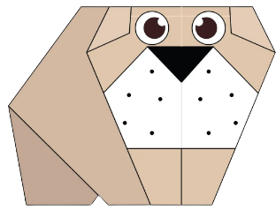
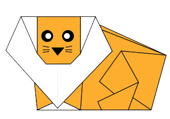
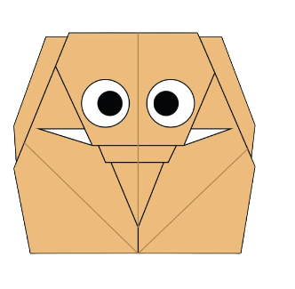

SOME INTERESTING FACTS ABOUT CAMELS
- Camels have three sets of eyelids and two sets of eyelashes to protect their eyes from the sand in the desert.
- Camels have thick lips which let them forage for thorny plants other animals can't eat.
- There are two types of camels: One humped or dromedary camels and two humped or bactrian camels.

SOME INTERESTING FACTS ABOUT CHAMELEONS
- There are over 200 species of chameleons.
- Almost half the population of chameleons live in Madagascar.
- Chameleons can see ultraviolent lights.

SOME INTERESTING FACTS ABOUT PIGEONS
- Pigeons are incredibly complex and intelligent animals.
- Pigeons are renowed for their outstanding navigational abilities.
- Pigeons are highly sociable animals.

SOME INTERESTING FACTS ABOUT TEDDYBEARS
- Teddy bears got their name from the story that Teddy Roosevelt refused to shoot a bear cub while on a hunting trip in 1902.
- The first toy stuffed bear was created by German toymaker Margarete Steiff. She created a soft plush with movable arms and legs and a friendly face after taking her nephew to the zoo in 1903.
- Washable teddy bears didn't appear until 1954 when the stuffing was switched to an easier to clean nylon fill. Before that, they were stuffed with mohair, wool, and other hard to clean fills.

SOME INTERESTING FACTS ABOUT PANDAS
- Pandas have great camoufalge for their environment.
- Their eyes are different from other bears.
- They spend a lot of their day eating.

SOME INTERESTING FACTS ABOUT FLYING CICADAS
- Cicadas can survive a huge fall as babies or nymphs.
- Most have red-orange eyes.
- Female may be attracted to the sound of motors.

SOME INTERESTING FACTS ABOUT BULLDOGS
- Bulldogs were developed for bull baiting purposes. In England, this was known as a practical purpose that was meant to round up bulls for castration. It also gained popularity as a blood sport when dog owners would force their bulldogs to participate in a brutal activity as a form of entertainment for others..
- Since bulldogs have large heads about 80% are delivered by Caesarean section.
- Due to their strong appearance and build; Bulldogs are one of the most popular mascots for sports teams and universities.

SOME INTERESTING FACTS ABOUT LIONS
- The roar of a male lion can be heard from a distance of, as much as, five miles.
- Cross- breeding between lions and tigers resulting in a 'tiglon'.
- A Lions lifespan is 15 years in the wild.

SOME INTERESTING FACTS ABOUT ELEPHANTS
- An elephant’s trunk has more than 40,000 muscles in it and no bones, which give it the flexibility.
- The elephant is the national animal of Thailand.
- Life Span - elephants can live for up to 70 years.